|
|
||||||||||||||||||||||||||||||||||||||||||||||||||||||||||||||||||||||||||||||||||||||||||||||||||||||||||||||||||||
|
|
||||||||||||||||||||||||||||||||||||||||||||||||||||||||||||||||||||||||||||||||||||||||||||||||||||||||||||||||||||
|
Задача поиска сильносвязных компонент в орграфе Задача топологической сортировки Задача обратной топологической сортировки Задача транзитивного замыкания орграфа
Терминология орграфов
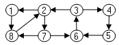
Задача поиска сильносвязных компонент в орграфеЗадача нахождения сильно связных компонент является примером применения поиска в глубину в орграфе. Многие алгоритмы, использующие орграфы, первоначально организуют разложение орграфа на сильно связные компоненты. После этого задача решается отдельно для каждой компоненты и затем решения комбинируются в соответствии со связями между компонентами. Этот прием называется редуцированием графа к графу компонент. Сильно
связной компонентой орграфа G=(V, E)
называется множество вершин U Пример орграфа с тремя сильно связными компонентами: 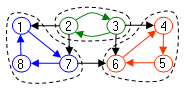
Каждая из вершин орграфа принадлежит какой - либо сильно связной компоненте, но некоторые дуги могут не принадлежать никакой сильно связной компоненте. Такие дуги ведут от вершины одной компоненты к вершине другой компоненты. Редуцированный граф всегда является ациклическим орграфом. 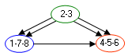
Общая схема нахождения сильно связных компонент следующая:
1. Выполняется полный обход в глубину на орграфе. Вершины помечаются метками времени обнаружения и окончания обработки - d[u] /f [u]. 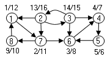 При поиске в глубину на шаге 1 вершина связной компоненты, обнаруженная первой становится прародителем в дереве поиска всех вершин этой связной компоненты и имеет максимальное время завершения. В нашем примере такими вершинами являются вершины 1, 2, 6.
2. Создается новый транспортированный орграф GT путем обращения направления всех дуг в графе G.
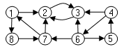
Исходный
граф G и транспортированный граф GT
имеют одни и те же связные компоненты,
поскольку, если существует путь u
3. Выполняется полный обход в глубину в графе GT, начиная с вершины с наибольшей меткой f[u]. Если первый обход не охватывает все вершины GT, то начинается новый обход среди оставшихся вершин, начиная с вершины, имеющей наибольшую метку f[u]. 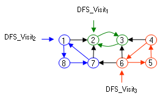 Помня о том, что связные компоненты сохраняются в транспонированном орграфе GT, построение дерева поиска в глубину начинается с вершины - прародителя связной компоненты. Обход в глубину дает дерево поиска, включающее все и только вершины этой связной компоненты. Другие вершины не достижимы, так как не входят в эту связную компоненту. Вызов для вершин 2, 1, 6 функции DFS - Visit окрашивает в черный цвет все вершины очередной связной компоненты, белые на этот момент. Поскольку вершины 2, 1, 6 имеют максимальное время завершения обработки, полученные на первом шаге в исходном графе G, то при обходе в глубину в графе GT они становятся корнями деревьев обхода в глубину.
4. Полученные деревья обхода в глубину определяют состав сильно связных компонент в исходном графе G. 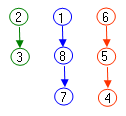
Задача топологической сортировкиТопологическая сортировка используется для ациклических графов - DAG. Чаще всего DAG используется для моделирования отношений предшествования между объектами или задачами, которые в теории множеств называются отношениями частичного порядка. Типичным примером частичного порядка является задача о включении подмножеств в множество. Пусть
дано множество {a, b, c}. В множестве можно
выделить следующие подмножества:
{a} {a, b} {a, b} {a, b, c}
DAG отражает эти частичные порядки следующим образом: 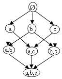 Путь в DAG отражает следующий порядок включений подмножеств: подмножество. представляемое предыдущей вершиной на пути, содержится в подмножестве, представленном следующей вершиной. Свойства отношения частичного порядка:
Типичной задачей, обрабатывающей отношения частичного порядка, является задача составления расписания. Необходимо организовать завершение решения некоторого подмножества задач с учетом условий и ограничений, задающих отношения предшествования между задачами. Постановка задачи составления расписания: пусть дано множество задач, на котором задан частичный порядок, определяющий, что решение некоторых задач должно быть завершено прежде, чем начнется выполнение некоторых других задач. Необходимо организовать решение всех задач так, чтобы все задачи были успешно завершены с соблюдением частичного порядка. Задача решается достаточно просто, если на множестве задач задан только один вид отношений предшествования. Решение сводится к определению линейного порядка элементов множества, в котором отношения предшествования существуют между элементами с меньшим номером и элементом с большим номером в линейном порядке. Установленный линейный порядок задает очередность или хронологию решения задач. В интерпретации с помощью графов эта задача называется топологической сортировкой. Пусть имеется орграф без циклов - DAG.. Необходимо указать такой линейный порядок его вершин, что любое ребро ведет от меньшей вершины к большей. Очевидно, что если в графе есть циклы, такого порядка не существует. 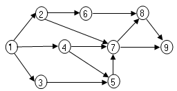 Или можно сформулировать задачу топологической сортировки иначе: расположить вершины графа на горизонтальной прямой так, чтобы все ребра шли слева направо.
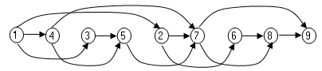
Алгоритм топологической сортировки является модифицированным алгоритмом полного обхода в глубину. В момент завершения обработки вершины, когда она закрашивается в черный цвет, номер вершины заносится в стек. По окончании полного обхода порядок вершин в стеке задает порядок топологической сортировки. Алгоритм имеет вид: Topological - Sort (G)
1.
for
для каждой вершины
u
2. do color [u] ← БЕЛЫЙ
3.
p[u] ←
nil
4. time ← 0
5.
for
для каждой вершины
u
6. do if color [u] = БЕЛЫЙ 7. then DFS -Visit_Sort (u)
DFS_Visit_Sort(u)
1.
color
[u] ← СЕРЫЙ
2. d[u] ← time 3. time ← time + 1
4.
for для
каждой вершины v
5. do if color [v] = БЕЛЫЙ 6. then p[v] ← u 7. DFS -Visit_Sort (v) 8. color [u] ← ЧЕРНЫЙ
9. Push(St,
u)
10. f[u] ← time 11. time ← time + 1 12. return
Иллюстрация работы алгоритма топологической сортировки: 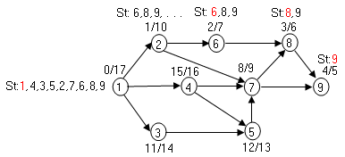
Задача обратной топологической сортировкиИногда между элементами множества необходимо задавать отношения зависимости, противоположные отношениям предшествования. То есть, элемент множества u зависит от элемента v, если v предшествует u. Типичной задачей, использующей отношения зависимости, является сортировка словаря по определениям терминов. Если в определении термина u используется определение термина v, то определение термина v должно предшествовать в словаре определению термина u. В интерпретации с помощью DAG термину соответствует вершина DAG и существует ребро (u, v), если термин u зависит от v. Вершина с термином v должна предшествовать вершине с термином u в линейном порядке вершин. :
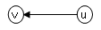 То есть, в DAG, моделирующем отношения зависимости, нужно установить такой линейный порядок, чтобы дуги были направлены от вершин с большими номерами к вершинам с меньшими номерами. Такая задача называется задачей обратной топологической сортировки. Алгоритм обратной топологической сортировки отличается от алгоритма прямой топологической сортиовки лишь использованием вместо стека очереди FIFO - Q. При завершении обработки очередной вершины в процессе полного обхода в глубину она заносится в очередь. После завершения обхода порядок вершин в очереди Q определяет порядок обратной топологической сортировки. Иллюстрация обратной топологической сортировки: 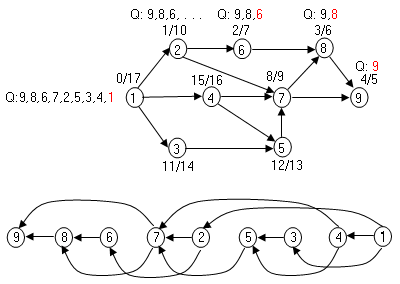
Задача транзитивного замыкания орграфа Задача
о транзитивном замыкании состоит в
следующем: дан орграф G (V,E) с вершинами 1, 2, .
. . , V. Требуется определить для любой пары
вершин i, j Транзитивное замыкание можно вычислить при помощи алгоритма Уоршолла [1]. Алгоритм строит матрицу транзитивного замыкания Т, в которой tij = 1, если существует путь между вершинами i и j в графе G, и tij = 0 - в противном случае. Фактически матрица Т является матрицей смежности графа G*. Матрица строится постепенно при рассмотрении в качестве промежуточной очередной вершины k, k = 1, 2, . . . , V на путях между всеми парами вершин. Изначально: 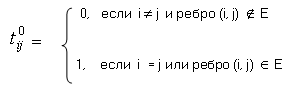 При рассмотрении в качестве промежуточной вершины k для всех путей, элементы матрицы T пересчитываются по формуле: 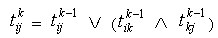
Псевдокод алгоритма Уоршолла имеет вид: Warsall_Transitive_Closure (G) 1. n ← |V[G]| 2. for i ← 1 to n 3. do for j ← 1 to n
4.
do
if i = j
or ребро (i, j) 5. then Ti,j ← 1 6. else Ti,j ← 0 7. for k ← 1 to n 8. do for i ← 1 to n 9. do for j ← 1 to n
10.
do 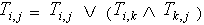 11. return T
Трудоемкость алгоритма Уоршолла имеет нотацию O(V3).
Для иллюстрации алгоритма рассмотрим построение матрицы транзитивного замыкания T для орграфа: 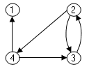
Изначально матрица транзитивного замыкания T0 имеет вид: T0
При добавлении в качестве промежуточной вершины 1 матрица не изменяется: T1
При добавлении в качестве промежуточной вершины 2 появляются новые пути. Например, выстраивается новый путь (3, 4):
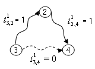 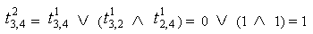
В итоге, после рассмотрения в качестве промежуточной вершины 2 матрица Т имеет вид: T2
После рассмотрения в качестве промежуточной вершины 3 матрица Т имеет вид: T3
После рассмотрения в качестве промежуточной вершины 4 матрица Т имеет вид: T4
|
||||||||||||||||||||||||||||||||||||||||||||||||||||||||||||||||||||||||||||||||||||||||||||||||||||||||||||||||||||
|
|